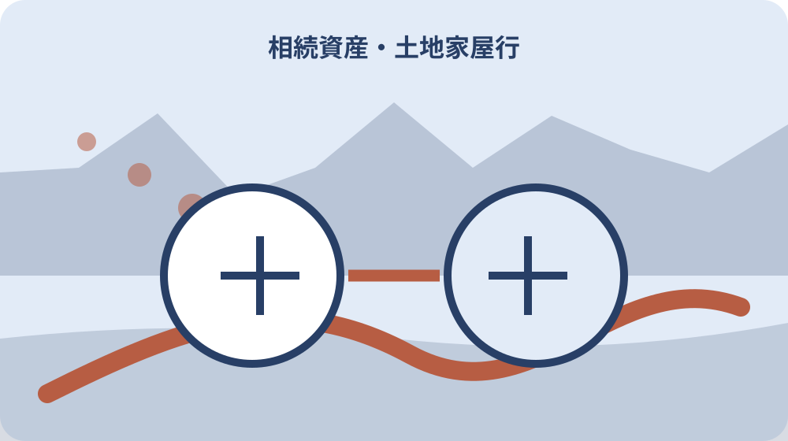

先に結論を確認する
この記事の答え：全部とは確定できません。課税明細を入口に名寄帳、登記事項を照合し、森町外、非課税、共有、未登記家屋などの候補を未確認一覧へ残します。
森町で最初に照合する条件：課税明細だけで全資産と確定しない
課税明細を入口にして一覧を完成扱いしない
森町の相続不動産を洗い出すとき、手元の固定資産税通知だけで故人の土地家屋が全部そろったと決めません。課税明細、名寄帳、登記事項、契約資料を同じ物件番号で照合します。
この記事の答えは、課税明細の一筆・一棟を転記し、名寄帳で所有者単位の明細を確認し、登記事項で名義・地番・家屋番号・持分を確かめ、見つからない物件を未確認一覧へ残すことです。
森町FAQは名寄帳を所有者または納税義務者ごとの資産明細と説明し、納税通知書に添付される課税明細と同内容と案内しています。
同内容という説明は、どちらか一枚だけで全国の全資産が分かるという意味ではありません。森町内の課税資料の役割として使い、登記や他市町村の資料を別に確認します。
完了条件は税額の合計ではありません。土地・家屋・共有持分ごとに根拠資料があり、未確認の理由と次の照会先が見えることです。
資産一覧の第1欄「課税明細を入口にして一覧を完成扱いしない」では、資料に載る表記をそのまま転記する原文列と、家族が照合した物件番号を分けます。後から別資料が出ても、どの文字や数字を根拠に同一物件と考えたかを戻って確認できます。
「課税明細を入口にして一覧を完成扱いしない」で見つからない項目は削除せず、資料不足、町外候補、未登記候補、共有候補のいずれかへ置きます。次の照会先と担当日を加え、未確認が確認済み一覧へ紛れないようにします。
課税明細を入口にして一覧を完成扱いしないという作業名は表の索引にも使います。索引から元資料、担当者、確認日、次の期限へ一回で移れるかを確かめ、家族が別の物件や別の年度の記録を誤って開かないよう物件番号を併記します。
通知書・課税明細・納付書の役割を分ける
納税通知書は税額や納期限等を確認する資料、課税明細は土地・家屋の明細を読む入口、納付書は支払いに使う資料として分けます。封筒単位で一資料にしません。
課税明細から所在地、地番、地目、地積、家屋番号や床面積、評価額等の表示を一行ずつ転記します。列名は原本どおりにし、推測で名称を変えません。
免税点等により税額が出ない物件、共有資産、年度途中の状況など、課税明細だけで見えにくい可能性を未確認欄へ置きます。
複数年度がある場合は最新年度だけを残さず、物件の増減、地目・面積表示、名義表示の変化を比較します。古い明細は取得時点の手掛かりになります。
支払済みであることと所有権を持つことは同じではありません。納付者名を登記名義へそのまま転記しないようにします。
第2の照合場面「通知書・課税明細・納付書の役割を分ける」では、課税資料、登記資料、家族資料のどこに同じ物件らしい記載があるかを横並びにします。一致を判断した日と根拠を残し、元の文字列や数値を消しません。
照合できなかった「通知書・課税明細・納付書の役割を分ける」の候補は、次に町へ聞くもの、法務局で調べるもの、現地で位置を確かめるものへ振り分けます。保留理由と担当を付け、確認済みの資産合計へ混ぜません。
通知書・課税明細・納付書の役割を分けるという作業名は表の索引にも使います。索引から元資料、担当者、確認日、次の期限へ一回で移れるかを確かめ、家族が別の物件や別の年度の記録を誤って開かないよう物件番号を併記します。
名寄帳で所有者単位の明細を確認する
森町の名寄帳の見方資料は、土地、家屋、償却資産等を所有者・納税義務者単位で確認する手掛かりになります。相続候補を物件行へ分ける際に使います。
取得できる人、本人確認、委任状、手数料、年度は町へ確認します。森町の税務証明用委任状には名寄帳の写しが対象として示されています。
名寄帳の氏名表記が故人、共有代表、相続人代表などどの立場かを確認します。代表者名だけを単独所有者と読み替えません。
土地は一筆、家屋は一棟を基本に番号を付けます。同じ所在地に複数筆や附属建物がある場合、住所だけで一件にまとめません。
名寄帳を取得した日、対象年度、申請者、ページ数を記録します。後から別年度の資料と混ざらないよう原本ファイル名へ年度を入れます。
資産一覧の第3欄「名寄帳で所有者単位の明細を確認する」では、資料に載る表記をそのまま転記する原文列と、家族が照合した物件番号を分けます。後から別資料が出ても、どの文字や数字を根拠に同一物件と考えたかを戻って確認できます。
「名寄帳で所有者単位の明細を確認する」で見つからない項目は削除せず、資料不足、町外候補、未登記候補、共有候補のいずれかへ置きます。次の照会先と担当日を加え、未確認が確認済み一覧へ紛れないようにします。
名寄帳で所有者単位の明細を確認するという作業名は表の索引にも使います。索引から元資料、担当者、確認日、次の期限へ一回で移れるかを確かめ、家族が別の物件や別の年度の記録を誤って開かないよう物件番号を併記します。
登記事項で地番・家屋番号・持分を照合する
課税資料の物件行を登記事項と照らし、所在、地番、地目、地積、家屋番号、種類、構造、床面積、所有者、持分を確認します。
課税上の所在地表示と登記の所在が完全に同じとは限りません。文字が違う場合は別物件と即断せず、資料名と表記を両方残します。
共有の場合は共有者と持分を登記事項から確認します。納税通知の送付先代表者だけでは共有関係を確定しません。
抵当権等の権利がある場合は、自分で法律効果を判断せず専門家へ確認します。資産一覧には存在を示す確認欄だけを置きます。
登記事項の取得日を記録します。古い権利証や要約書だけに頼らず、行動時点の情報へ更新します。
第4の照合場面「登記事項で地番・家屋番号・持分を照合する」では、課税資料、登記資料、家族資料のどこに同じ物件らしい記載があるかを横並びにします。一致を判断した日と根拠を残し、元の文字列や数値を消しません。
照合できなかった「登記事項で地番・家屋番号・持分を照合する」の候補は、次に町へ聞くもの、法務局で調べるもの、現地で位置を確かめるものへ振り分けます。保留理由と担当を付け、確認済みの資産合計へ混ぜません。
登記事項で地番・家屋番号・持分を照合するという作業名は表の索引にも使います。索引から元資料、担当者、確認日、次の期限へ一回で移れるかを確かめ、家族が別の物件や別の年度の記録を誤って開かないよう物件番号を併記します。

未登記家屋と増改築の候補を分ける
課税明細に家屋があるのに家屋番号が確認できない、現地に増築部分や物置があるなどの差は、未登記候補として別行にします。
差があるから違法、無価値と断定しません。町の家屋課税資料、建築資料、現地状況を示し、土地家屋調査士等へ確認します。
母屋、離れ、倉庫、車庫、物置を写真番号と配置図で結びます。家族が通称で呼ぶ建物名だけでは専門家へ伝わりません。
解体済みの建物が資料に残る、現地にある建物が資料にない場合は、解体日・建築時期候補と根拠を記録します。
未確認家屋を一覧から削除すると後で再発見できません。確認先、担当、期限を付けた保留行として残します。
資産一覧の第5欄「未登記家屋と増改築の候補を分ける」では、資料に載る表記をそのまま転記する原文列と、家族が照合した物件番号を分けます。後から別資料が出ても、どの文字や数字を根拠に同一物件と考えたかを戻って確認できます。
「未登記家屋と増改築の候補を分ける」で見つからない項目は削除せず、資料不足、町外候補、未登記候補、共有候補のいずれかへ置きます。次の照会先と担当日を加え、未確認が確認済み一覧へ紛れないようにします。
未登記家屋と増改築の候補を分けるという作業名は表の索引にも使います。索引から元資料、担当者、確認日、次の期限へ一回で移れるかを確かめ、家族が別の物件や別の年度の記録を誤って開かないよう物件番号を併記します。
山林・農地・道路から離れた土地を探す
実家敷地だけでなく、山林、農地、墓地周辺、進入路持分、飛び地などの可能性を家族の記憶と古い書類から探します。
固定資産税額が小さい、現地へ行ったことがないという理由で一覧から外しません。地番が分からなければ字名、通称、隣接、取得経緯を候補欄へ置きます。
農地や森林には相続後の届出等が関係する場合があります。資産の存在を確認した後、地目と区域を所管へ確認し、別手続へ渡します。
進入路や水路沿いの細い持分は、住宅の住所だけでは見落としやすい項目です。売買契約書、公図、測量図等も参照します。
現地確認は境界確定ではありません。写真と位置候補を残し、境界杭や所有範囲は必要に応じ専門家へ確認します。
第6の照合場面「山林・農地・道路から離れた土地を探す」では、課税資料、登記資料、家族資料のどこに同じ物件らしい記載があるかを横並びにします。一致を判断した日と根拠を残し、元の文字列や数値を消しません。
照合できなかった「山林・農地・道路から離れた土地を探す」の候補は、次に町へ聞くもの、法務局で調べるもの、現地で位置を確かめるものへ振り分けます。保留理由と担当を付け、確認済みの資産合計へ混ぜません。
山林・農地・道路から離れた土地を探すという作業名は表の索引にも使います。索引から元資料、担当者、確認日、次の期限へ一回で移れるかを確かめ、家族が別の物件や別の年度の記録を誤って開かないよう物件番号を併記します。
森町外と全国の不動産候補を切り分ける
森町の課税資料で分かるのは町の課税対象に関する情報です。故人の勤務歴、居住歴、家族の話、過去の契約から他市町村の候補を別一覧にします。
政府広報は所有不動産記録証明制度が2026年2月2日に始まり、特定の人が所有権の登記名義人となっている全国の不動産を一覧化する仕組みを案内しています。
制度の申請資格、必要書類、対象範囲、記載されない可能性、最新の受付方法は法務局へ確認します。一覧が相続関係や権利を確定するとは扱いません。
氏名・住所の変遷や表記違いがある場合、検索条件を専門家へ伝えます。結果がないことを不動産不存在の最終証明と即断しません。
森町分と町外分は同じ物件番号体系で管理し、市町村、管轄法務局、確認状況を列にします。
資産一覧の第7欄「森町外と全国の不動産候補を切り分ける」では、資料に載る表記をそのまま転記する原文列と、家族が照合した物件番号を分けます。後から別資料が出ても、どの文字や数字を根拠に同一物件と考えたかを戻って確認できます。
「森町外と全国の不動産候補を切り分ける」で見つからない項目は削除せず、資料不足、町外候補、未登記候補、共有候補のいずれかへ置きます。次の照会先と担当日を加え、未確認が確認済み一覧へ紛れないようにします。
森町外と全国の不動産候補を切り分けるという作業名は表の索引にも使います。索引から元資料、担当者、確認日、次の期限へ一回で移れるかを確かめ、家族が別の物件や別の年度の記録を誤って開かないよう物件番号を併記します。
相続人代表者届と所有権移転を混同しない
森町の固定資産税様式ページには、所有者が亡くなった場合の相続人代表者指定届があります。これは納税通知等を受ける代表者に関する町の手続です。
代表者届を出した人が不動産を単独取得した、相続登記が終わったとは扱いません。登記名義と遺産分割は別に確認します。
町から届く郵便の宛名、送付先、対象年度を記録し、誰が開封し家族へ共有するか決めます。代表者一人の手元で資産情報を止めません。
共有資産の代表者変更等の様式もあるため、現在の届出区分を町へ確認します。故人の事情を一般様式へ自己判断で当てはめません。
税務上の届出日と相続登記申請日を別列にすると、どちらか一方だけで完了したと思い込むのを防げます。
第8の照合場面「相続人代表者届と所有権移転を混同しない」では、課税資料、登記資料、家族資料のどこに同じ物件らしい記載があるかを横並びにします。一致を判断した日と根拠を残し、元の文字列や数値を消しません。
照合できなかった「相続人代表者届と所有権移転を混同しない」の候補は、次に町へ聞くもの、法務局で調べるもの、現地で位置を確かめるものへ振り分けます。保留理由と担当を付け、確認済みの資産合計へ混ぜません。
相続人代表者届と所有権移転を混同しないという作業名は表の索引にも使います。索引から元資料、担当者、確認日、次の期限へ一回で移れるかを確かめ、家族が別の物件や別の年度の記録を誤って開かないよう物件番号を併記します。
物件の重複と表記揺れを整理する
課税明細、名寄帳、登記事項、契約書で同じ物件の表記が異なることがあります。資料ごとの原表記を残し、統合した物件番号を別に付けます。
地番と住居表示を混ぜません。建物の所在地説明には住所を使えても、登記・課税の照合は地番や家屋番号を中心にします。
枝番、合筆、分筆、地目変更の履歴が疑われる場合は、古い番号を削除せず旧番号欄へ置きます。
重複候補は面積、所有者、位置図、隣接地、資料年度で照合します。似た数字だけで一件にまとめません。
統合判断をした人と日付、根拠を記録します。後から新資料が出たら分け直せるよう、元データを保持します。
資産一覧の第9欄「物件の重複と表記揺れを整理する」では、資料に載る表記をそのまま転記する原文列と、家族が照合した物件番号を分けます。後から別資料が出ても、どの文字や数字を根拠に同一物件と考えたかを戻って確認できます。
「物件の重複と表記揺れを整理する」で見つからない項目は削除せず、資料不足、町外候補、未登記候補、共有候補のいずれかへ置きます。次の照会先と担当日を加え、未確認が確認済み一覧へ紛れないようにします。
物件の重複と表記揺れを整理するという作業名は表の索引にも使います。索引から元資料、担当者、確認日、次の期限へ一回で移れるかを確かめ、家族が別の物件や別の年度の記録を誤って開かないよう物件番号を併記します。
家族へ資産一覧と未確認一覧を分けて渡す
確認済み一覧には根拠資料、取得日、名義、持分を付けます。未確認一覧には候補地、手掛かり、次の照会先、担当、期限を付けます。
確認済みと推定を色だけで分けず文字でも表示します。白黒印刷や口頭共有でも状態が伝わるようにします。
税額や評価額を売却価格と扱いません。価格判断が必要なら別の目的と資料で調べます。
個人情報を含む戸籍、税資料、登記事項は閲覧者を絞り、専門家へ渡すときも必要範囲を確認します。
家族会議では全物件の処分結論を同時に求めず、存在確認と資料不足の解消を先に行います。
第10の照合場面「家族へ資産一覧と未確認一覧を分けて渡す」では、課税資料、登記資料、家族資料のどこに同じ物件らしい記載があるかを横並びにします。一致を判断した日と根拠を残し、元の文字列や数値を消しません。
照合できなかった「家族へ資産一覧と未確認一覧を分けて渡す」の候補は、次に町へ聞くもの、法務局で調べるもの、現地で位置を確かめるものへ振り分けます。保留理由と担当を付け、確認済みの資産合計へ混ぜません。
家族へ資産一覧と未確認一覧を分けて渡すという作業名は表の索引にも使います。索引から元資料、担当者、確認日、次の期限へ一回で移れるかを確かめ、家族が別の物件や別の年度の記録を誤って開かないよう物件番号を併記します。
大石の視点：見つからない行を消さない
ここまでの名寄帳、課税明細、相続人代表者届は森町公式資料、所有不動産記録証明制度は国の案内で確認できる事実です。個別の権利と相続は専門家へ確認します。
私、大石浩之は、資産一覧と同じくらい未確認一覧を大切にします。これは町の指定様式ではなく、山林や共有持分、未登記家屋を「分からないから無し」としないための実務提案です。
査定や売却の前に物件単位をそろえると、現地、税、登記、管理費の話を同じ対象で進められます。
評価額が低い物件も、管理、境界、農地・森林の手続が必要な場合があります。金額だけで調査順を決めません。
まだ売ると決めていない家族にも、物件の存在と資料保管先を残すことは役立ちます。
資産一覧の第11欄「大石の視点：見つからない行を消さない」では、資料に載る表記をそのまま転記する原文列と、家族が照合した物件番号を分けます。後から別資料が出ても、どの文字や数字を根拠に同一物件と考えたかを戻って確認できます。
「大石の視点：見つからない行を消さない」で見つからない項目は削除せず、資料不足、町外候補、未登記候補、共有候補のいずれかへ置きます。次の照会先と担当日を加え、未確認が確認済み一覧へ紛れないようにします。
大石の視点：見つからない行を消さないという作業名は表の索引にも使います。索引から元資料、担当者、確認日、次の期限へ一回で移れるかを確かめ、家族が別の物件や別の年度の記録を誤って開かないよう物件番号を併記します。
三資料と未確認行を再点検する
最後に課税明細、名寄帳、登記事項の三資料を物件行ごとに開き、対応する番号があるか確認します。
一資料しかない行は不足理由を付け、町、法務局、専門家のどこへ確認するか決めます。
森町外候補、未登記家屋候補、共有持分候補を別の未確認一覧に残します。
一覧の更新日、作成者、元資料年度、保管場所を表紙へ書き、古い一覧の上書きを避けます。
結論は、課税明細を入口に名寄帳と登記事項を照合し、確認できない物件を消さず次の照会へ渡すことです。
第12の照合場面「三資料と未確認行を再点検する」では、課税資料、登記資料、家族資料のどこに同じ物件らしい記載があるかを横並びにします。一致を判断した日と根拠を残し、元の文字列や数値を消しません。
照合できなかった「三資料と未確認行を再点検する」の候補は、次に町へ聞くもの、法務局で調べるもの、現地で位置を確かめるものへ振り分けます。保留理由と担当を付け、確認済みの資産合計へ混ぜません。
三資料と未確認行を再点検するという作業名は表の索引にも使います。索引から元資料、担当者、確認日、次の期限へ一回で移れるかを確かめ、家族が別の物件や別の年度の記録を誤って開かないよう物件番号を併記します。